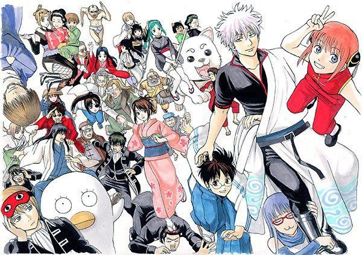

<DOCTYPE html>
<html lang = "ja">
<head>
<meta charset="utf-8">
<meta name=”viewport” content=”width=device-width,initial-scale=1.0″>
<title>銀魂 </title>
<link rel="stylesheet" href="gintama.CSS">
<style>


</style>
</head>
<body>

<h1 align="center">あらすじ</h1> 
<br><h2  align="center"> 
<br>基本的には主人公の銀時達と周囲の面々が繰り広げる1話から3話
<br>程度で完結するドタバタギャグコメディが描かれることが多いが、
<br>その中に混じって銀時の過去やそれにまつわる因縁を軸にしたストーリー
<br>が進められていく形となっている。宇宙の知的生物天人（あまんと）
<br>諸族によって開国を強要され、銀河文明が導入された江戸のかぶき町を
<br>主たる舞台とする物語である。</br>
</body>

</html>